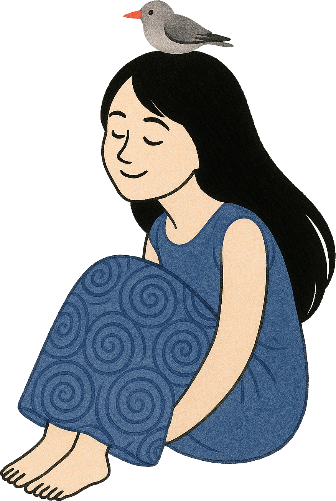
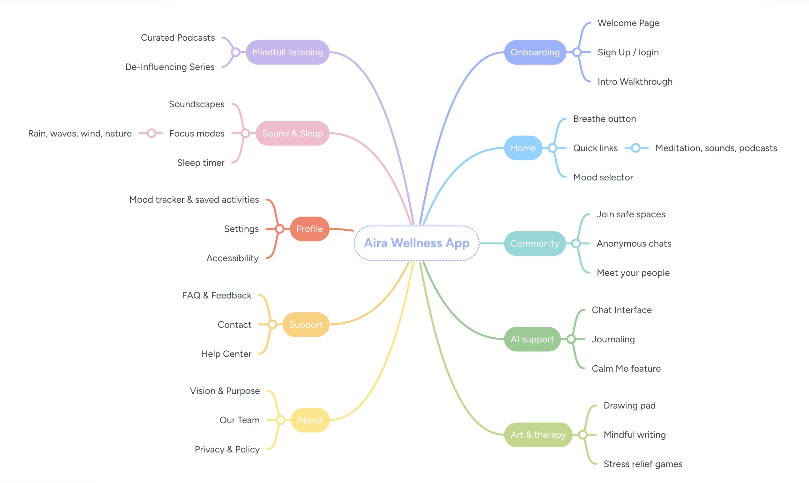
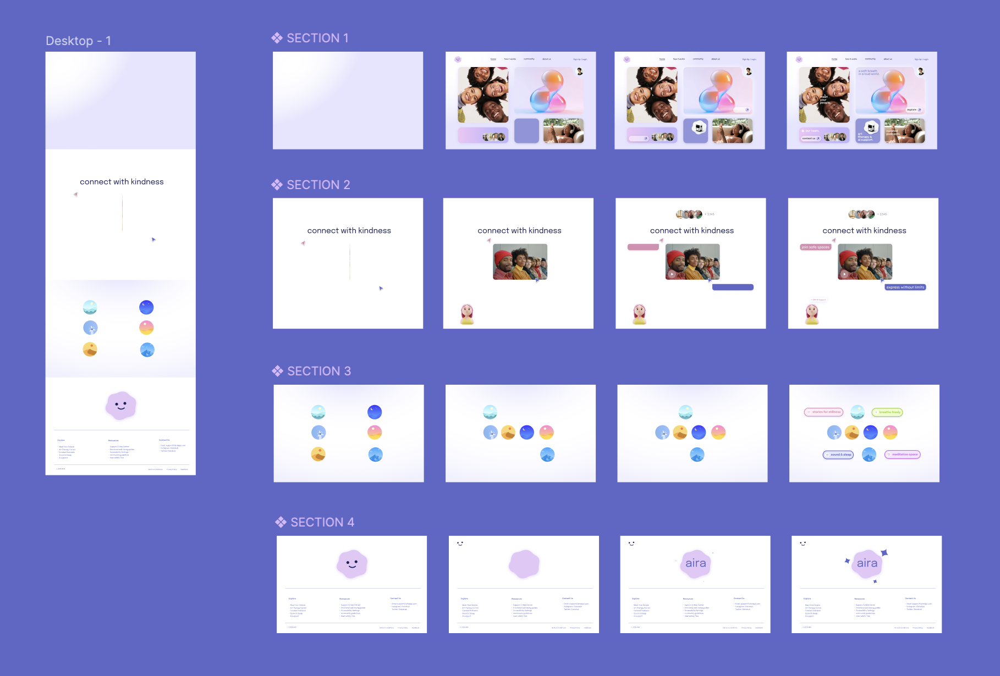

Aira is a gentle, inclusive mental wellness app created for people who find it difficult to express their emotions—whether they’re introverted, extroverted, or simply overwhelmed. In a world that moves too fast and often demands constant productivity, Aira offers a space to pause, breathe, and feel.
Problem
A lot of people dealing with anxiety or burnout find mental health apps too clinical or overwhelming. What they really need is a softer, more comforting digital space where they can reconnect with themselves and feel supported.
Goal
Design a minimal, non-intrusive wellness tool that offers users emotional grounding, reflection and calm through accessible, user-friendly features.
The Story Behind Aira

I created Aira because I’ve seen—and lived—what it’s like to feel overwhelmed in a world that’s always rushing. I’ve used apps that promised help but locked it behind a paywall. I’ve searched for comfort in platforms that felt too clinical, too cold, or simply didn’t feel made for someone like me.
Aira is my answer to that. It’s a soft, welcoming space for anyone who needs to slow down.
This project is for the people who don’t always have someone to talk to. For those who are tired of pretending they’re okay. For anyone looking for even the smallest sense of peace in a very loud world.
Mind Mapping

Interface in motion

Figma Prototype
Takeaways
What I learned
Designing Aira taught me that digital spaces can feel human. Every element — color, motion, and tone — can create calm when used with intention. I learned to design with empathy, focus on emotional usability, and keep simplicity at the heart of connection.
Impact
Aira became more than a project — it’s a reminder that gentle design can make people feel seen, safe, and a little less alone.
Additionally, I would...
Personalized mood journeys that adapt to users’ emotions.
Live community sessions or journaling clubs.
Integration with wearables for real-time stress detection and guided breathing.
A desktop version with calming visuals for workspace use.
Design a mobile version for quick moments of calm on the go.